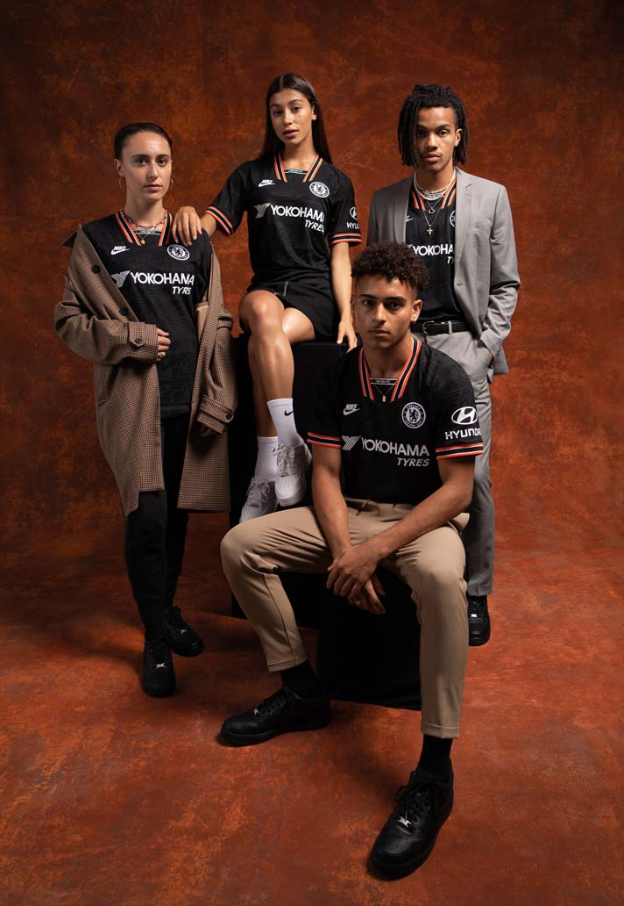
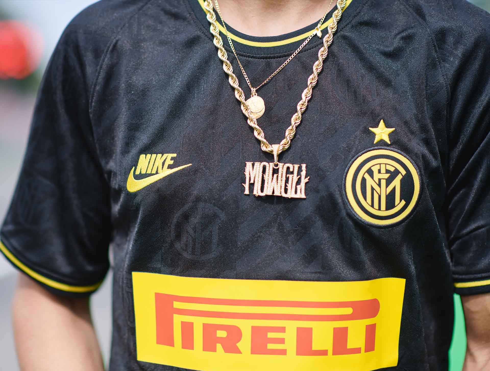
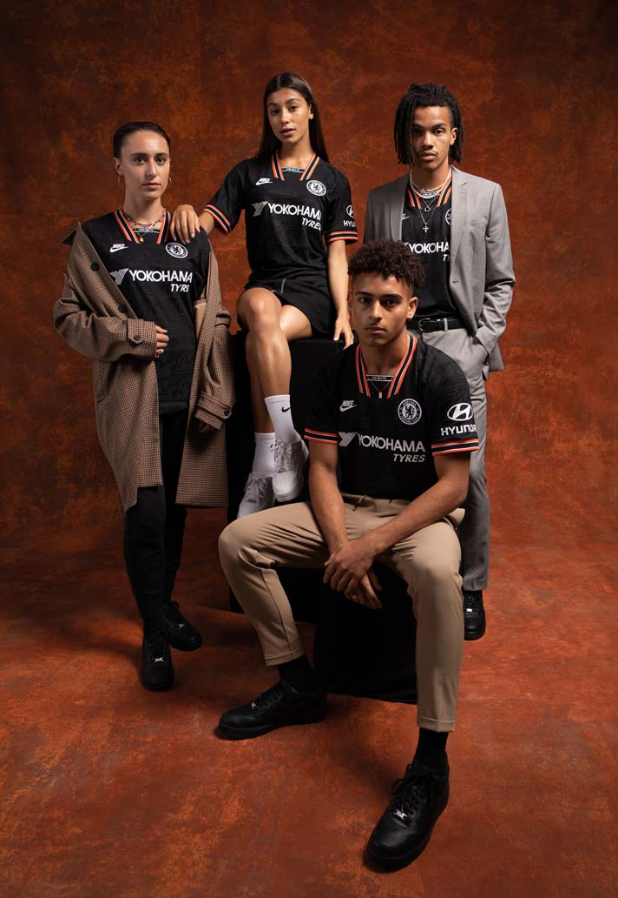
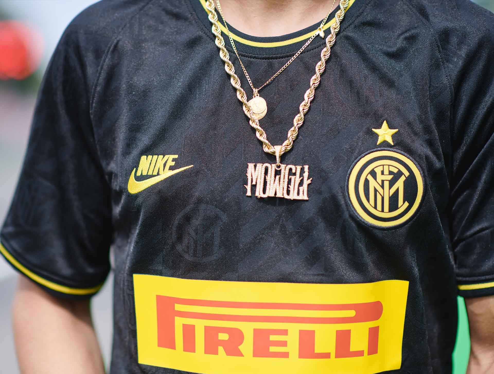
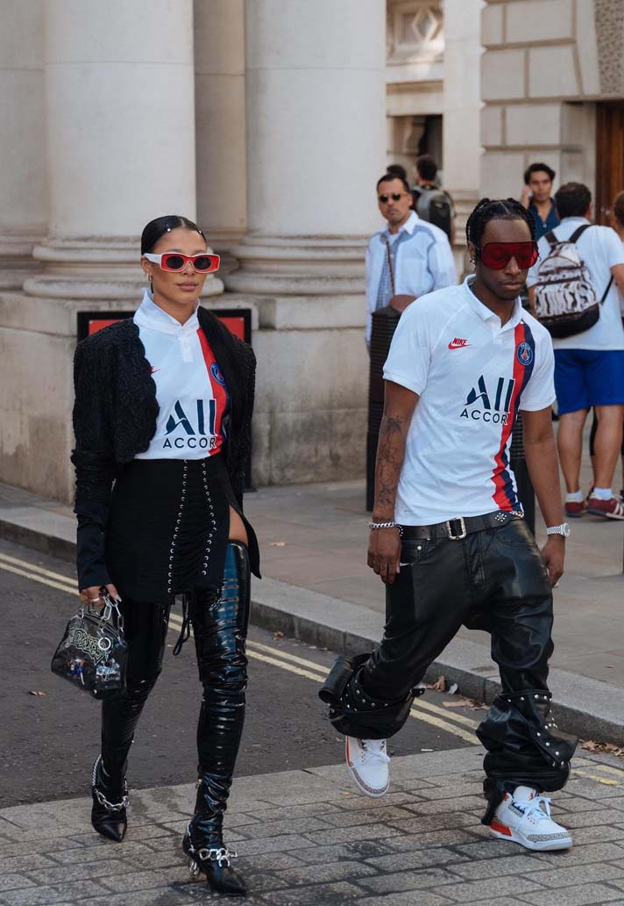
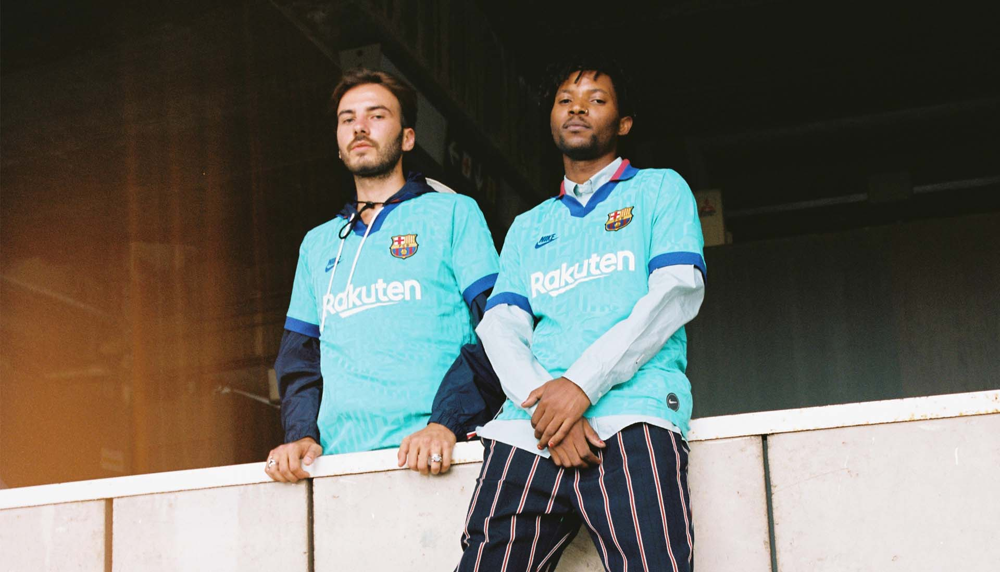
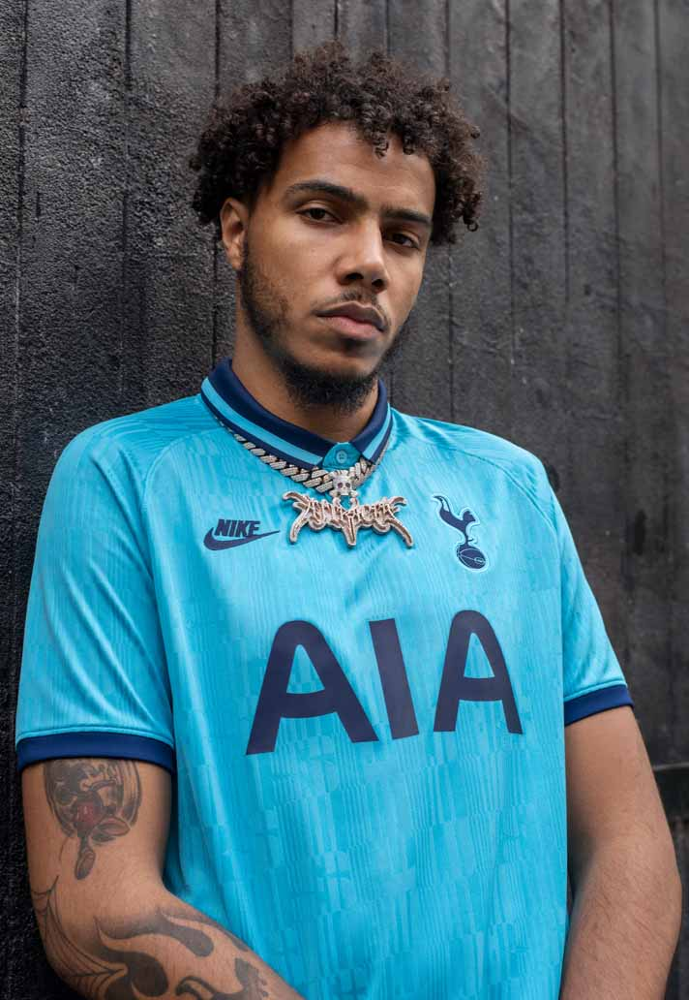
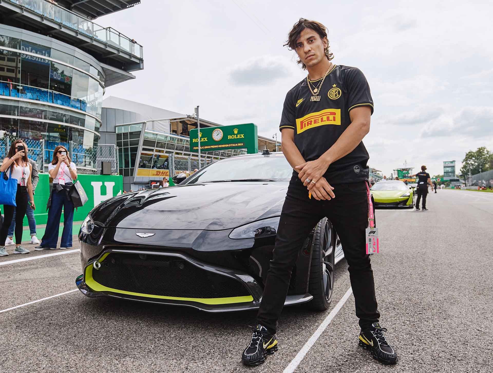

Off the
Pitch—
 

While the reception of the retro collar that graced some of the kits was mixed, the drop as a whole was a roaring success in fashion and streetwear circles. The PSG kit even made an appearance at London Fashion Week as stylists and designers Bloody Osiris, Sami Miro and Sita Abellan incorporated it into their streetwear style and British rapper AJ Tracy was involved in the Spurs drop.
Reserved primarily for European competitions, third shirts have always allowed designers a little more freedom, and with nostalgia levels set at an all-time high for the 90s, Nike looked to that decade for what has to be the simplest, yet most satisfying of tap ins: bring back the Futura logo, some wonderfully exuberant collars that anyone under the age of 20 will have to research to appreciate, add in a link to a past design from the decade and you've got yourself a belter of a shirt.